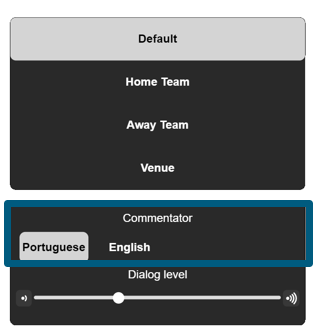
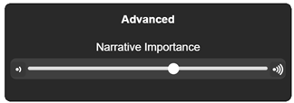

This document describes use cases and requirements for a proposed API for a Next Generation Audio (NGA) interface in a web environment, enabling web applications to provide user interfaces to control NGA experiences.
In contrast to traditional audio codecs (e.g. AAC), NGA codecs utilize new ways of object-based audio coding and in-band transmission of a variety of metadata to control the playback-side rendering of audio content. The proposed API exposes information describing NGA scene metadata and allows interacting with the respective codec to individualize the user experience during audio playback.
The API is envisioned to be codec-agnostic, supporting various NGA implementations while maintaining compatibility with protected media content.
This document is a work in progress and serves as a basis for discussion. Feedback is highly appreciated, particularly regarding the optimal placement of the API within the web platform architecture.
Introduction
In contrast to traditional audio codecs (e.g. AAC), Next Generation Audio (NGA) codecs utilize new ways of [=object based audio=] coding and in-band transmission of a variety of metadata to control the playback-side rendering of audio content. Object-based audio coding enables content providers to deliver individual audio components to the playback-side in a flexible way. The components can be combined into a single bitstream or separated into multiple bitstreams.
NGA codecs provide a rich set of metadata and allow users to change certain aspects of an audio presentation, including:
Dialogue enhancement to control the intelligibility of dialogue in a movie
Dynamic range control to adjust the presentation to different listening environments
Advanced language selection
Spatial audio positioning and interactivity
An extensive set of standardized NGA metadata is crucial for adapting to the given listening environment and therefore for delivering an immersive audio experience, enabling the system to adapt to user preferences, and enabling advanced user interaction possibilities. The same set of metadata that allows the user to interact with the content can be used to facilitate corresponding application interfaces.
Maybe the most basic metadata in the context of NGA is a grouping of objects and settings into so-called [=preselections=]. [=Preselections=] are pre-baked combinations of object gain and object position settings which can be activated or deactivated, and effectively set defaults for the parameters underneath. Preselections can also expose more customization options, e.g. changing the dialogue loudness within a range based on the metadata, and thus serve as the entry point for any further customization.
The envisioned API should expose information describing said metadata of the NGA scene and should allow interacting with the respective codec to individualize the user experience during audio playback. This document does not prejudge on where the API should ideally be placed. For example, it could be added directly to {{HTMLMediaElement}} or to the corresponding {{AudioTrack}} object representing an NGA track.
Definitions
audio description
narration added to the soundtrack to describe important visual details that cannot be understood from the main soundtrack alone [[WCAG22]]
music and effects
TODO insert definition
object based audio
Audio represented using individual [=objects=] with spatial properties rather than fixed channels
prominence
The relative gain/volume of an audio component, often adjustable within creator-defined limits.
Use Cases
The following use cases are all audio centric, but it should be noted that there exist video specific use cases as well. As time goes on, this document might pick up further use cases that are not audio specific.
The next section will textually describe those audio use-cases, for a more immersive "description" the reader is directed to https://youtu.be/fxsvVcIOiJA.
U1. Allowing the User to Select a [=Preselection=]
One basic NGA feature is selecting a so-called audio preselection. An audio preselection is a set of predefined mix parameters for the included content components. Such components, also known as audio objects, of an audio program, can for example be the dialogue object, or the background audio object.
Example for an NGA Menu offering different Preselections (Default, Home Team, Away Team, Venue)
A user can choose from a variety of preselections on the playback side to enable a basic form of adaptation to their personal preference for rendering these components.
Examples include:
Preselections where background audio is combined with different dialogue tracks (for example, different languages resulting in one preselection per language)
Preselections with associated components such as [=audio description=]
Alternative audio mixes where dialogue gain is increased for better intelligibility for people that are hard of hearing or in noisy environments
U2. Use case requirements on API
exposing the available preselections from an incoming media stream, including a meaningful description for the user of each preselection
a setter/getter for the active preselection
Gain Interactivity
With an NGA codec, content creators can enable gain adjustment for certain content components. Users may set these gain values to their preference, within limits chosen by the creator.
One example application is changing the gain of a spoken language component for better intelligibility, e.g., the commentator, [=Audio Description=], or the main dialogue of a movie. To offer this functionality, a content creator could author the metadata during production to allow gain interactivity for the component within a defined range (for example, between -6 dB and +12 dB).
Example for a dialogue gain/[=prominence=] control
Use case requirements on API
exposing the content components which allow gain interactivity, including a meaningful description for the user
exposing the allowed range of the gain interactivity for each component that allows gain interactivity
a setter/getter for the current gain value for each component that allows gain interactivity
U3. Position Interactivity
With NGA, a content creator can allow position interactivity for individual content components. This feature can be used to further enhance [=Audio Description=] intelligibility. Users may use this functionality for better spatial separation between the main dialogue and the Audio Description.
Examples include:
Spatially panning Audio Description to the rear-right speaker position for visually impaired users
Moving PA announcer audio objects in sports events to overhead speakers for an enhanced stadium atmosphere
Positioning different commentators to the left and the right for more natural conversation experience
Example Application showing [=position interactivity=] controls for the commentator
Use case requirements on API
exposing the content components for position interactivity, including a meaningful description for the user
exposing the allowed range of the position interactivity, for each component that allows position interactivity
a setter/getter for the current position value, for each component that allows position interactivity
U4. Selection Among Multiple Audio Elements
NGA codecs enable the ability to select between multiple content components. This is typically a choice of different content alternatives, where only exactly one can be active at a time.
Examples include:
The language of the dialogue in a movie
The home or away commentator in a sports event
Optional content components, e.g. Audio Description

Example Application showing language selection and gain interactivity controls for the Commentator
Use case requirements on API
exposing the content components that can be enabled/disabled, and an option list where exactly one option can be selected, including a meaningful description for the user
a setter/getter for enabling/disabling content components
a setter/getter for selecting the active content component out of a selection of content components
U5. Controlling Different Audio Attributes Simultaneously
One advanced NGA concept for better intelligibility of dialogue components in a TV program is called narrative importance, which allows better intelligibility by grouping audio content components into hierarchies based on their importance for understanding the scene.
For example, the highest hierarchy level contains elements that are essential for the narrative (dialogue, semantically rich effects, [=Audio Description=]), while lower hierarchy levels contain background music and non-essential effects. Multiple layers of importance can be created, with all necessary gain modifications applied simultaneously through a single control.

Example Application showing a [=narrative importance=] slider
Use case requirements on API
exposing all content components including the interactivity ranges, a meaningful description for the end-user, and an attribute that allows grouping of content components (e.g. M&E, Dialogue, [=Audio Description=], etc.)
a setter/getter for changing the gain values of each content component or [=audio object=]
Requirements
In the examples above, a number of requirements on the API are implicitly assumed:
Codec Agnostic
The API MUST be codec-agnostic. There are many NGA codecs from competing companies that all offer all or parts of the personalization use cases outlined above. The API should work for all of these, such that implementation has the highest value for browser implementers as well as application developers.
Protected Media Compatibility
The API MUST NOT preclude the use of protected media. Most NGA codecs are used for commercial content, much of which is rights protected and therefore DRM protected. In technical terms, this likely means that the API has to work when media is played back using EME.
Multiple Media Streams
The API MUST work when multiple media streams are being rendered/decoded. In most media playback scenarios, there is at least one video and one audio codec being used. Since personalization options are typically tied to a specific media stream, the API needs to be specific to individual media streams.
Real-time Operation
The API MUST be usable while media is playing and MUST be operable asynchronously to the media. When a personalization change is made, the user would expect the change to be effective immediately, not when the tip of the media queue is eventually rendered.
Non-blocking Hardware Access
The API MUST NOT block on hardware/codec access. The personalization features often require setting parameters on either the decoder or the rendering pipeline, which may run in different threads or on different hardware. Calls to set or get personalization features SHOULD return immediately, likely with a promise.
Gap Analysis
This section explores whether existing APIs can be used to decode and personalize NGA content.
WebCodecs + WebAudio Approach
The most obvious alternative would be to use a [[WEBCODECS]] {{AudioDecoder}} to decode NGA streams and [[WEBAUDIO]] {{AudioNode}}s to mix the resulting components.
However, this approach has several critical limitations that make it unsuitable for real-world NGA applications.
Incompatible with protected content: The most tangible limitation of a WebCodecs/WebAudio approach is that in this model, content is always in the clear. This is fundamentally incompatible with protected content models that are the backbone of high quality commercial media delivery on the internet.
Limited Spatial Audio Support: While WebAudio can carry more than two channels, there is no way to indicate the spatial configuration of those channels.
No Object-Based Audio Support: WebCodecs and WebAudio are designed around channels and nodes, not audio objects with spatial properties that NGA requires.
Content Creator has no control of mix result: The integrated approach ensures content creators' intent is preserved through metadata-defined constraints on mixing parameters. Delivering audio as separate streams cannot guarantee that content is mixed as intended by the content creator.
No metadata pipeline: Mixing of components in NGA is controlled by metadata. There is no defined way to carry such metadata, specifically when it needs to be time-aligned.
Beyond these concerns, there are further issues, as detailed in the following.
Delivery as a single stream
The industry has adopted an integrated stream delivery model where audio components and metadata are delivered together in a single stream.
Content delivered this way would need to be decoded into several streams of data and metadata that can then be mixed using WebAudio components.
This would require WebCodecs to be able to output more than one stream where one of those streams is time aligned metadata used for the mixing process.
Separate Component Delivery
Delivering audio components as separate streams might seem like a solution but presents significant drawbacks:
Increased Complexity and Failure Points: Separate delivery creates new failure scenarios where some components may be received while others are dropped during transmission.
Optimization Limitations: Having and decoding all components in one decoder allows optimizations that are otherwise not available, which can be crucial for embedded devices.
JavaScript or WASM Decoder
A JavaScript or WASM-based decoder with output passed to the Web Audio API would face the same metadata bridging problems as the WebCodecs approach, plus additional drawbacks:
Performance Limitations: Many codecs would be too complex to implement in real-time on most platforms using JavaScript or WASM.
Battery and Resource Impact: Software decoding is significantly more resource-intensive than hardware-accelerated decoding.
Encoding and Media Capture
Current web platform APIs such as WebCodecs [[WEBCODECS]] {{AudioEncoder}} and [[MEDIASTREAM-RECORDING]] {{MediaRecorder}} allow websites to record and encode audio. We do not propose to add support for Next Generation Audio codecs to such APIs at this time.
Acknowledgments
The editors would like to thank all contributors to this draft and the members of the W3C Media Entertainment Interest Group for their valuable feedback and contributions.